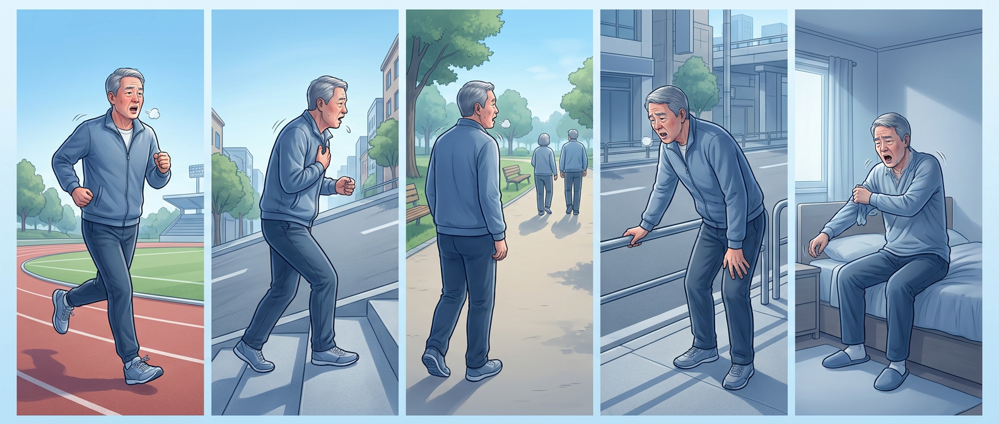

성명
생년월일
작성일

0단계힘든 운동 때만
1단계빨리 걷기·오르막
2단계평지도 천천히
3단계약 100 m에 멈춤
4단계옷 입을 때도
1. 평소 숨이 차는 정도 — 한 칸만 ✓
| ✓ | 단계 | 호흡곤란 내용 |
|---|---|---|
| 0 | 힘든 운동을 할 때만 숨이 차다 | |
| 1 | 평지를 빨리 걷거나, 약간 오르막 길을 걸을 때 숨이 차다. | |
| 2 | 평지를 걸을 때 숨이 차서 동년배보다 천천히 걷거나, 자신의 속도로 걸어도 숨이 차서 멈추어 쉬어야 한다. | |
| 3 | 평지를 약 100 m 정도 걷거나, 몇 분 동안 걸으면 숨이 차서 멈추어 쉬어야 한다. | |
| 4 | 숨이 너무 차서 집을 나설 수 없거나, 옷을 입거나 벗을 때도 숨이 차다. |
2. 지난 1년 동안 — 해당하는 칸에 ✓
| 질문 | 답 |
|---|---|
| 숨참·기침·가래가 갑자기 심해져 항생제나 먹는 스테로이드약을 더 처방받은 적 | 없음1번2번 이상 |
| 그 일로 입원한 적 · 응급실에 간 적 (각각 표시) | 입원 없음있음 응급실 없음있음 |
기억나지 않으면 비워 두세요. 이 체크표만으로 진단하지 않으며, 의사가 폐기능 검사와 함께 봅니다.